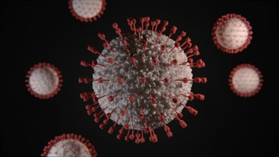

Sexually Transmitted Diseases(STDs)
Sexually transmitted diseases (STDs) or sexually transmitted infections (STIs) are generally acquired by sexual contact. The organisms (bacteria, viruses or parasites) that cause sexually transmitted diseases may pass from person to person in blood, semen, or vaginal and other bodily fluids. Sometimes these infections can be transmitted nonsexually, such as from mother to infant during pregnancy or childbirth, or through blood transfusions or shared needles. STDs don't always cause symptoms. It's possible to contract sexually transmitted diseases from people who seem perfectly healthy and may not even know they have an infection.
Symptoms
Sexually transmitted diseases (STDs) or sexually transmitted infections (STIs) can have a range of signs and symptoms, including no symptoms. That's why they may go unnoticed until complications occur or a partner is diagnosed.
NB:Signs and symptoms may appear a few days after exposure, or it may take years before you have any noticeable problems, depending on the organism.
Signs and symptoms that might indicate an STD/STI include:
- Sores or bumps on the genitals or in the oral or rectal area
- Painful or burning urination
- Discharge from the penis or vagina
- Sore, swollen lymph nodes, particularly in the groin but sometimes more widespread
- Unusual or odd-smelling vaginal discharge
- Pain during sex
- Lower abdominal pain
- Fever
- Rash over the trunk, hands or feet
Causes
Sexually transmitted diseases (STDs) or sexually transmitted infections (STIs) can be caused by:
- Bacteria
- Parasites
- Viruses 

Most common types of STDs/STIs are as follows
HUMAN PAPILLOMA VIRUS
This is a virus that can be passed from one person to another through intimate skin-to-skin or sexual contact. The most common symptom of HPV is warts on the genitals, mouth, or throat.
SYPHILLIS
This is a bacterial infection. It often goes unnoticed in its early stages. The first symptom to appear is a small round sore, known as a chancre. It can develop on your genitals, anus, or mouth. It’s painless but very infectious.
CHLAMEDIA
This is a type of bacteria and it’s the most commonly reported STD. Many people with chlamydia have no noticeable symptoms.
GONORRHEA
This is another common bacterial STD. It’s also known as “the clap.” Many people with gonorrhea develop no symptoms
PUBLIC LICE
“Crabs” is another name for pubic lice. They are tiny insects that can take up residence on your pubic hair. Like head lice and body lice, they feed on human blood. Common symptoms of pubic lice include: itching around the genitals or anus and small pink or red bumps around the genitals or anus.
TRICHOMONIASIS
It is also known as “trich.” It’s caused by a tiny protozoan organism that can be passed from one person to another through genital contact. less than one-third of people with trich develop symptoms. When symptoms do develop, they may include:discharge from the vagina or penis and burning or itching around the vagina or penis
HERPES
It is the shortened name for the herpes simplex virus (HSV). There are two main strains of the virus, HSV-1 and HSV-2. Both can be transmitted sexually. It’s a very common STD. The most common symptom of herpes is blistery sores.